Data Compression with Diffusion Models
Gergely Flamich
11/08/2026
lossy data compression
Have some data \(X\)
Encode:
- Transform \(f(X)\)
- Quantise: \(Z \gets \lfloor f(X) \rceil\)
- Lossless code: \(S \gets C(Z)\)
Decode:
- Recover: \(Z \gets C^{-1}(S)\)
- Reconstruct: \(\hat{X} = g(Z)\)
performance measures
- Rate: number of bits \(\mathbb{E}[|C(Z)|]\)
- Distortion: \(\mathbb{E}[\Delta(X, \hat{X})]\)
learned compression
- Transform: \(\hat{x} = g(\lfloor f(x) \rceil)\)
- Entropy model: \(p(z)\)
- Loss: \(\mathcal{L}(\beta) = \mathbb{H}[Z] + \beta \cdot \mathbb{E}[\Delta(X, \hat{X})]\)
❌ Quantisation not differentiable!
💡Add noise instead:
\(\hat{x} = g(f(x) + \epsilon)\)
🤔 How to encode \(f(x) + \epsilon\)?
relative entropy coding
Goal: given \(q\), encode a sample \(Z \sim q\)
💡Use a proposal \(p\); sample with shared seed
Minimal random coding:
- Draw \(Z_1, \dotsc, Z_N \sim p\)
- Select \(Z_i\) with probability \(\propto \frac{q(Z_i)}{p(Z_i)}\)
- Encode selected index \(I\).
a* coding
\(E_1, \dotsc, E_N \sim \mathrm{Exp}(1)\)
\[
I_{MRC} = \mathrm{argmin}_{i \in [1:N]} \left\{\frac{p(Z_i)}{q(Z_i)} \cdot E_i \right\}
\]
\[
I_{A^*} = \mathrm{argmin}_{i \in [1:N]} \left\{\frac{p(Z_i)}{q(Z_i)} \cdot \sum_{j = 1}^{i} E_j \right\}
\]
\(\mathbb{H}[I_{A^*}] \leq \mathrm{KL}[q || p] + O(\log_2 \mathrm{KL}[q || p])\)
Putting things together
Training
- Model: \(Z = f(x) + \epsilon, \quad \hat{X} = g(Z)\)
- Loss: \(\mathrm{KL}[q(Z \mid X) || p(Z)] + \beta \cdot \mathbb{E}[\Delta(X, \hat{X})]\)
Compression
- A* coding: encode \(Z \sim q(z \mid x)\)
- Budget: \({\color{red} N \approx 2^{\mathrm{KL}[q(Z \mid x) || p(Z)]}}\)
diffusion models
Song, Yang, et al. "Score-based generative modeling through stochastic differential equations."
the key identity
When denoiser is perfect:
\[
\mathrm{KL}[q(Z_s \mid X) || p(Z_s) ] = \mathrm{KL}[q(Z_{s:t} \mid X) || p(Z_{s:t})]
\]
For compression:
\begin{align*}
&\mathrm{KL}[q(Z_{s:t} \mid X) || p(Z_{s:t})] \\
\quad\quad &= \sum_{k = t}^s \mathrm{KL}[q(Z_{k} \mid X, Z_{k - 1:t}) || p(Z_k \mid Z_{k - 1:t})]
\end{align*}
diffC
Theis, Lucas, et al. "Lossy compression with Gaussian diffusion."
diffc for video compression
towards practicality
Goal: turn off-the-shelf model into video compressor
Angles of attack:
- Streamline and scale existing techniques
- Diffusion-specific improvements
the model
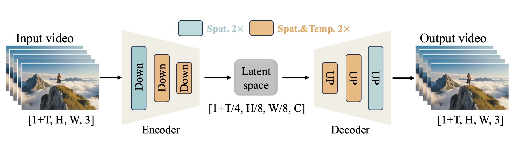
- Wan 2.1: rectified flow model
- No reflow: can derive equivalent to DDPM!
possible choices for probabilistic model
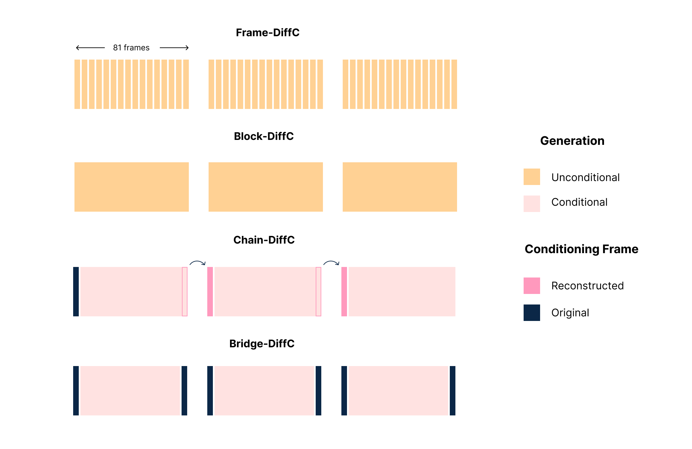
empirical findings
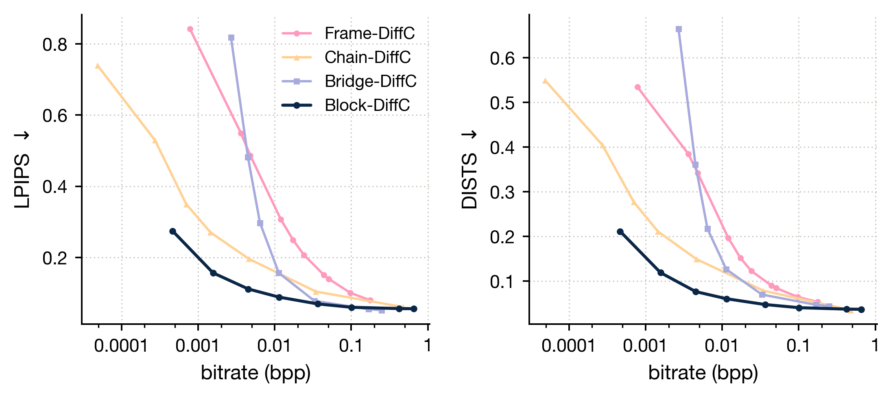
the challenge to tackle
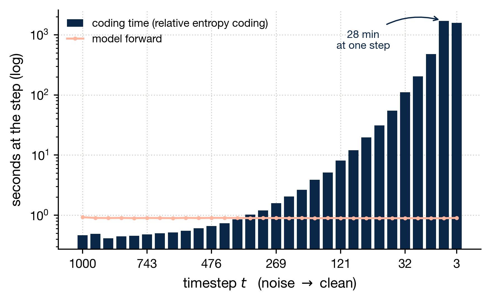
single step techniques
- \(\mathrm{KL}[q(Z_s \mid Z_t, x) || p(Z_s \mid Z_t)]\) too high
- Shuffle dimensions
- Partition into \(D\) fixed-size chunks
- Per-chunk \(\mathrm{KL}\) budget: 16 bits
- REC each chunk in parallalel
streamlined implementation
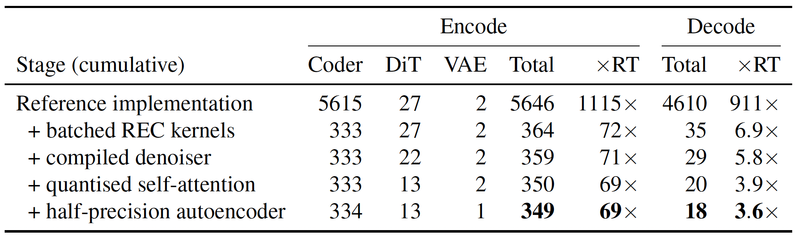
Table: sec/81-frame block. Bitrate within 0.15%, LPIPS within 0.0008
across diffusion steps
- Reduce number of diffusion steps
- \(\mathrm{KL} = \frac{1}{2}\Delta \mathrm{SNR}_t \cdot \Vert x_0 - \hat{x}_0(x_t) \Vert^2\)
- Quadratic grid based on \(\Delta \mathrm{SNR}_t\)
- Widen final proposal variance
- Cut later steps, use DDIM
state-of-the-art video compression with REC
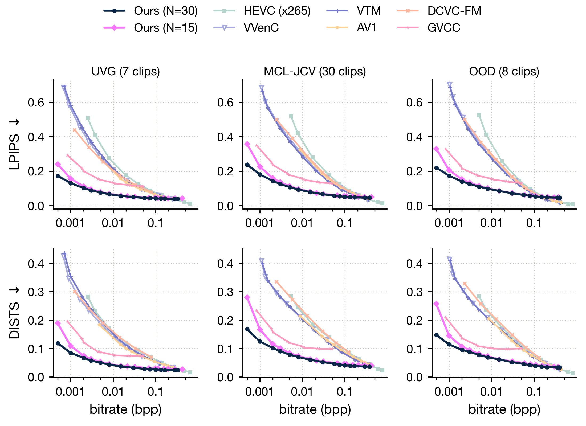
effect of widening
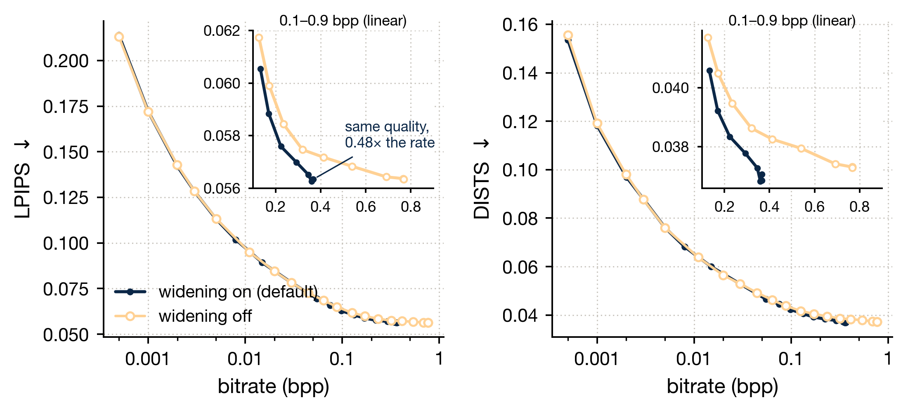
compression speed
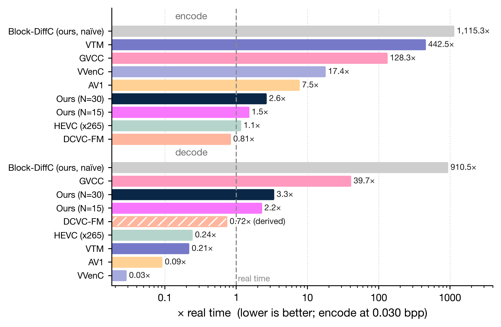
take-home messages
- Relative entropy coding: lossy compression using any probabilistic model
- DiffC: combine REC with diffusion models
- Implemented almost real-time video compression with REC
- Lots of potential: realism, differential privacy
different grids
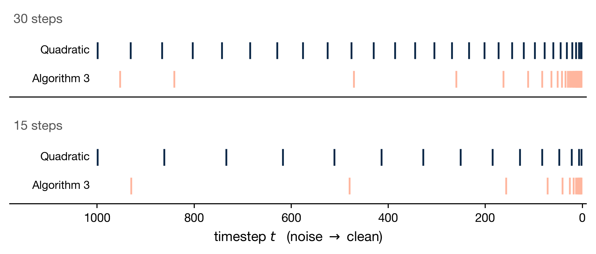
different grid results
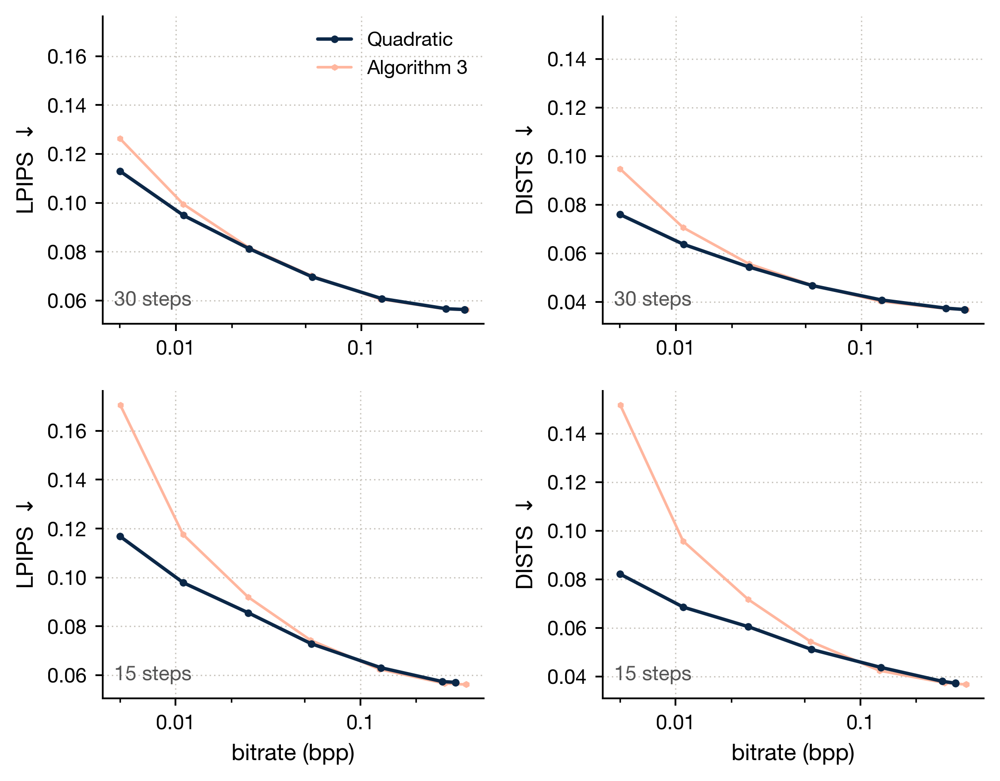
effect of grid resolution
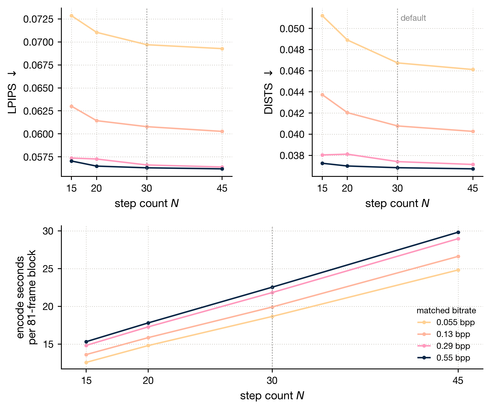
rate vs compression speed
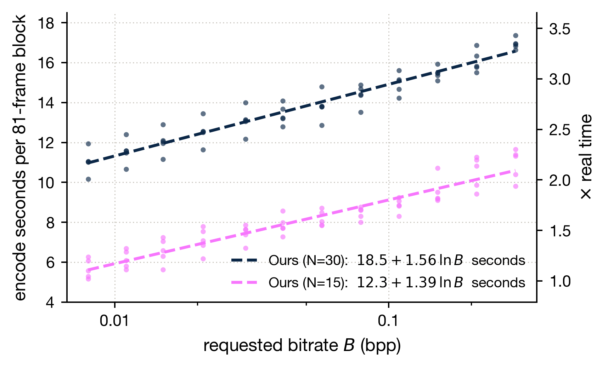